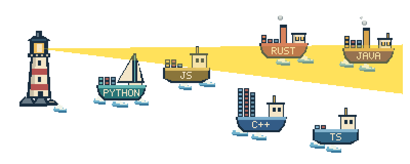

GIT SHIP / LOCAL PROOF
A little fleet. An open sea.
These are the same transparent GIF on light and dark README backgrounds.
Watch the hulls bob, wakes clear, smoke rise, and lantern flicker through the loop.
The static image is frame zero. Exported artwork contains no background.
Contact sheet
LIGHT · 800 PX
